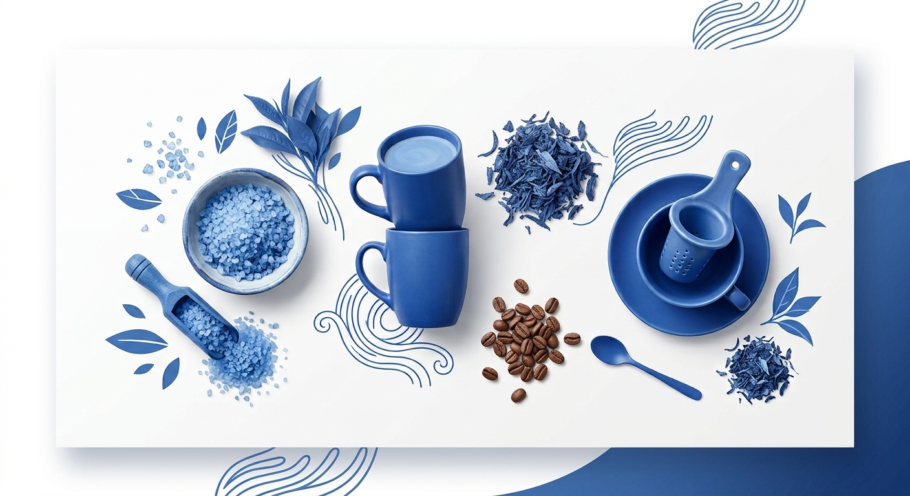
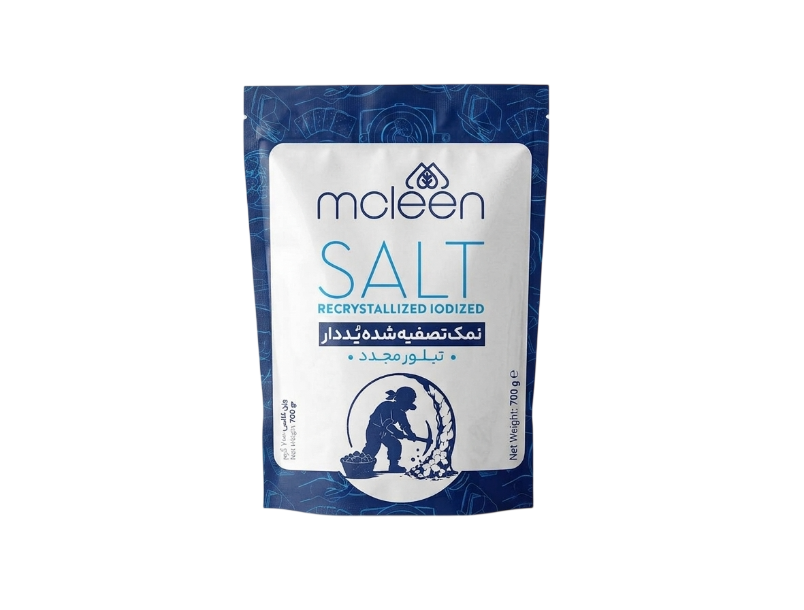
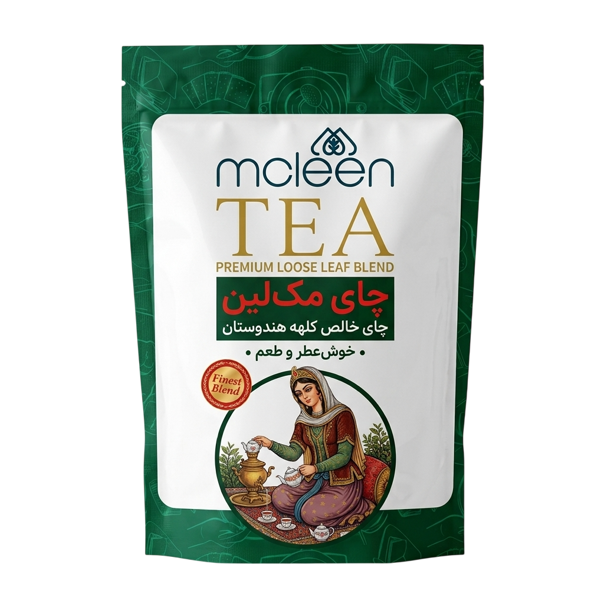
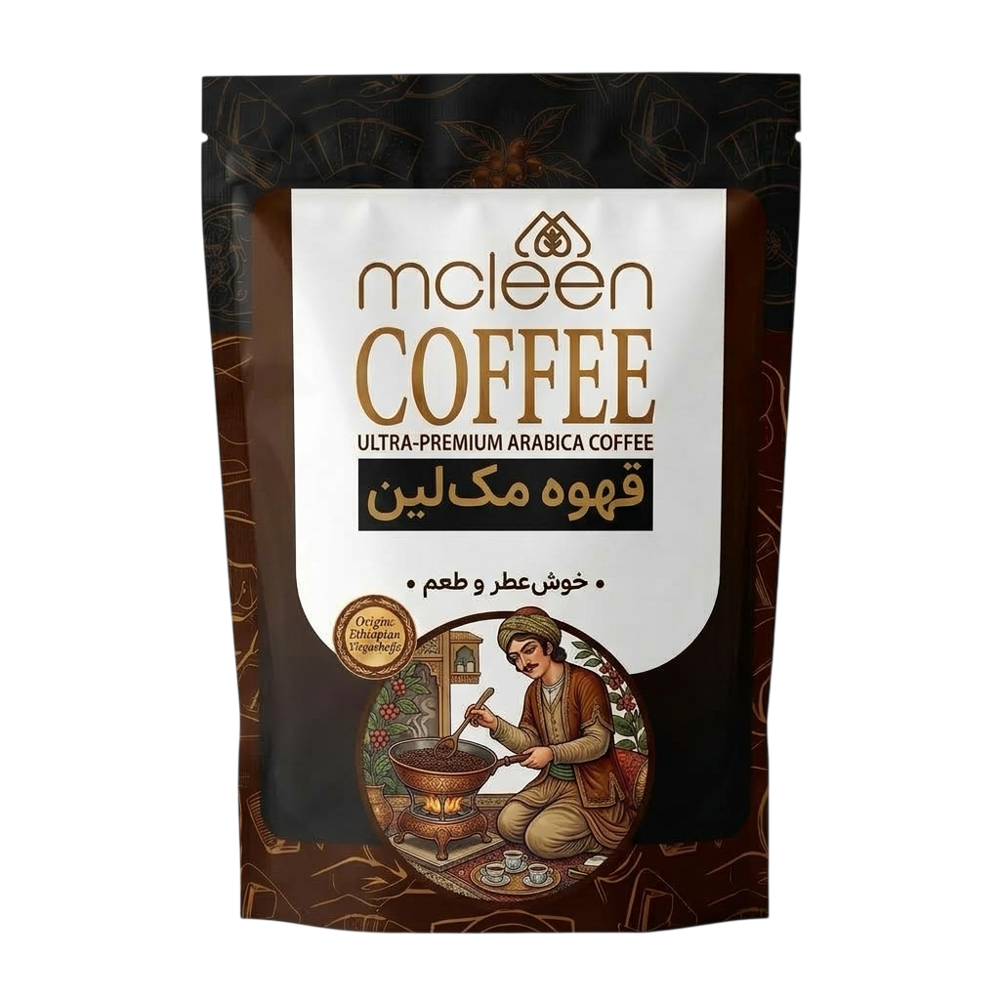

تلفن
02177349229
حلاوت گستر پارسیان
حلاوت گستر با هدف تولید و عرضه محصولات باکیفیت در حوزه صنایع غذایی، فعالیت خود را در چرمشهر ورامین آغاز کرده و امروز به عنوان یک مجموعه تولیدی بزرگ، در زمینه تولید و فرآوری محصولاتی همچون نمک، چای، ادویهجات و قهوه فعالیت میکند. این مجموعه با بهرهگیری از زیرساختهای تولیدی مناسب، تجهیزات صنعتی و نیروی انسانی توانمند، تلاش میکند محصولاتی با کیفیت پایدار، بستهبندی مناسب و استانداردهای مطلوب را به بازار عرضه نماید. در حلاوت گستر، کیفیت محصول و رضایت مشتری بخش جداییناپذیر از مسیر فعالیت ماست. از تأمین مواد اولیه تا فرآیند تولید، بستهبندی و عرضه، تلاش میکنیم با دقت و مسئولیتپذیری، محصولی شایسته اعتماد مصرفکنندگان و مشتریان تجاری ارائه کنیم. حلاوت گستر، همراه شما در تأمین محصولات غذایی باکیفیت و قابل اعتماد می باشد .

تولید و عرضهی محصولات غذایی با کیفیت و تنوع بالا
تولید محصولات غذایی
ما در حلاوت گستر با تکیه بر ظرفیتهای تولیدی و زیرساختهای صنعتی مجموعه، در زمینه تولید، فرآوری و بستهبندی محصولات متنوع غذایی فعالیت میکنیم. نمک، چای، ادویهجات و قهوه از جمله محصولات اصلی مجموعه ما هستند که با هدف پاسخگویی به نیاز بازار و ارائه محصولی باکیفیت تولید و عرضه میشوند. تلاش ما بر این است که با استفاده از تجهیزات مناسب، فرآیندهای منظم تولید و بهرهگیری از نیروی انسانی توانمند، محصولاتی با کیفیت پایدار و متناسب با نیاز مصرفکنندگان و مشتریان تجاری ارائه کنیم. تنوع محصولات و توسعه مستمر ظرفیتهای تولیدی، بخش مهمی از مسیر رشد حلاوت گستر را تشکیل میدهد.
کیفیت و کنترل محصولات
کیفیت، یکی از مهمترین اصول ما در حلاوت گستر است. ما باور داریم اعتماد مشتریان در طول زمان و با ارائه مستمر محصولات باکیفیت شکل میگیرد؛ به همین دلیل تلاش میکنیم کیفیت را در تمامی مراحل فعالیت مجموعه مورد توجه قرار دهیم. از انتخاب و تأمین مواد اولیه تا فرآیند تولید، فرآوری، بستهبندی و آمادهسازی محصول برای عرضه، دقت و نظارت لازم را در نظر میگیریم. هدف ما این است که محصول نهایی علاوه بر برخورداری از کیفیت مطلوب، بتواند پاسخگوی انتظارات مشتریان و نیازهای بازار باشد و نام حلاوت گستر را با اعتماد و رضایت همراه کند.
بستهبندی مدرن
ما در حلاوت گستر، بستهبندی را تنها مرحلهای برای آمادهسازی محصول نمیدانیم؛ بلکه آن را بخش مهمی از کیفیت و ارائه محصول به مشتری میدانیم. به همین دلیل تلاش میکنیم محصولات مختلف مجموعه با دقت و در شرایط مناسب فرآوری و بستهبندی شوند تا کیفیت محصول در مسیر عرضه تا رسیدن به دست مصرفکننده حفظ شود. توجه به نظافت، نظم، حفظ کیفیت محصول و بستهبندی مناسب از جمله مواردی است که در فرآیند کاری مجموعه مورد توجه قرار میگیرد. هدف ما ارائه محصولاتی است که علاوه بر کیفیت مطلوب، از نظر بستهبندی نیز شایسته اعتماد و انتخاب مشتریان باشند.
توسعه و نگاه به آینده
حلاوت گستر، توسعه را بخشی جداییناپذیر از مسیر آینده خود میداند. ما همواره تلاش میکنیم با استفاده از تجربه بهدستآمده، توسعه زیرساختها، بهبود فرآیندهای تولید و افزایش تنوع محصولات، جایگاه خود را در بازار محصولات غذایی ارتقا دهیم. نگاه ما تنها به نیازهای امروز بازار محدود نمیشود؛ بلکه تلاش داریم با شناخت نیاز مشتریان و حرکت همگام با تغییرات بازار، ظرفیتهای مجموعه را توسعه داده و زمینه ارائه محصولات متنوعتر و باکیفیتتر را فراهم کنیم. اعتماد مشتریان، سرمایه اصلی ما و حرکت رو به جلو، مسیر همیشگی حلاوت گستر است.
محصولات حلاوت گستر پارسیان با برند مک لین mcleen
نمک مک لین
نمک یددار مکلین در بستهبندی ۷۰۰ گرمی، انتخابی مناسب برای مصرف روزانه خانوادههاست. این محصول با استفاده از نمک باکیفیت و غنیشده با ید، برای استفاده در پختوپز و تهیه انواع غذاها تولید شده است. بستهبندی مناسب و وزن استاندارد آن، استفاده و نگهداری محصول را آسان میکند.

چایی مک لین
چای مکلین با انتخاب برگهای مرغوب چای و فرآوری دقیق، تجربهای دلپذیر از یک چای خوشعطر و خوشطعم را برای شما فراهم میکند. این چای با رنگ مناسب، عطر مطلوب و طعمی متعادل، انتخابی ایدهآل برای لحظات استراحت، دورهمیهای خانوادگی و پذیرایی از مهمانان است.

قهوه مک لین
قهوه مکلین با عطر دلنشین و طعمی غنی، انتخابی مناسب برای دوستداران قهوه و افرادی است که به دنبال تجربهای لذتبخش در طول روز هستند. ترکیب متعادل عطر و طعم این قهوه، آن را به گزینهای مناسب برای شروع یک روز پرانرژی، استراحتی کوتاه یا دورهمیهای دوستانه تبدیل کرده است.
